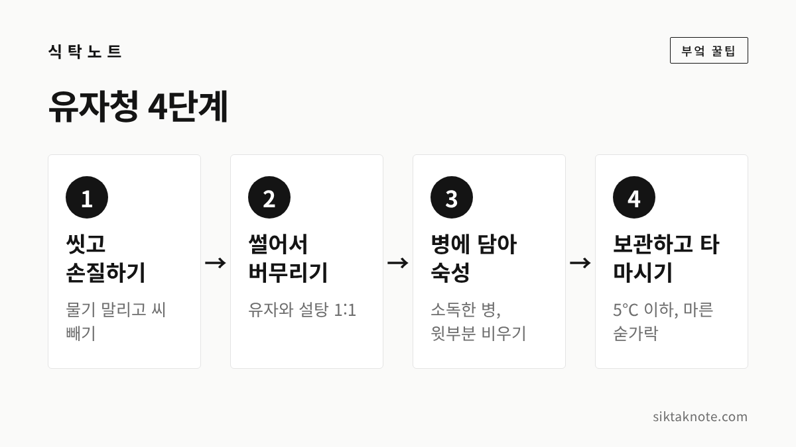
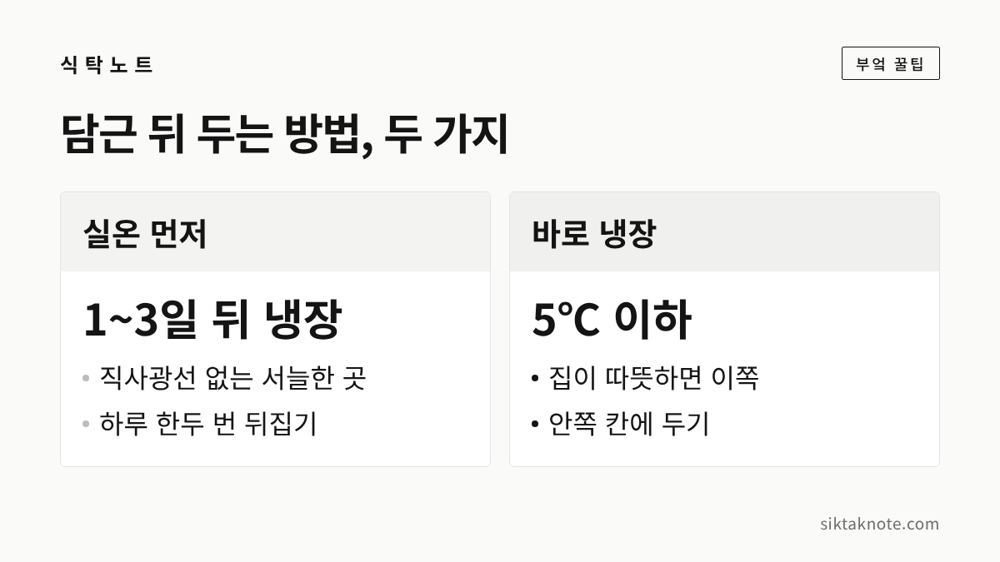

유자청 만드는 법 4단계, 집에서 담그는 방법

3줄 요약
- 유자청은 씻기·손질, 썰어 버무리기, 병에 담아 숙성, 보관과 타 마시기의 4단계로 담급니다.
- 설탕은 씨를 뺀 유자와 같은 무게로 맞추는 1:1이 흔한 기준이고, 물기와 병 소독이 곰팡이를 막는 핵심이에요.
- 곰팡이나 알코올 냄새가 나면 걷어내고 먹지 말고 병째 버리세요.
찬바람이 불면 따뜻한 유자차 한 잔이 생각나는데요. 유자청은 유자와 설탕, 깨끗한 병만 있으면 집에서도 담글 수 있습니다. 다만 물기가 조금만 남아도 곰팡이가 생기기 쉬워서 순서를 지키는 게 중요해요. 오늘은 씻고 손질하기, 썰어서 설탕에 버무리기, 병에 담아 숙성하기, 보관하고 타 마시기까지 네 단계로 나눠 알려 드리겠습니다.

먼저 알아 둘 것
유자는 늦가을이 제철이에요. 레이디경향의 2007년 기사에도 늦가을이 유자의 제철이라고 나옵니다. 주산지로는 전남 고흥이 가장 자주 소개되는데요. 경인일보 2020년 기사는 2019년 기준으로 고흥이 전국 유자 생산량의 약 66%를 차지한다고 전했고, 위키트리 2025년 11월 기사는 고흥 유자의 수매가 11월 11일부터 시작됐다고 했습니다. 완도나 거제 같은 다른 지역은 이번에 자료로 확인하지 못해서 적지 않았어요.
유자청 레시피는 농촌진흥청이나 식약처가 하나로 정해 둔 기준을 찾지 못했습니다. 식약처가 안내한 것은 매실청이고, 매실과 유자는 다른 과일이니까요. 그래서 이 글은 위키트리의 2026년 10월 28일 요리꿀팁 기사를 뼈대로 삼고, 다른 보도로 보완했습니다. 숫자는 집마다 달라질 수 있다는 점을 먼저 말씀드립니다.

유자 고르고 설탕 준비하기
고를 때는 껍질의 요철이 뚜렷하고 탱탱하며 향과 색이 짙은 것이 좋다고 합니다. 농촌진흥청과 건강보험공단 웹진의 안내인데요, 두 사이트를 이 작업 환경에서는 열지 못해서 이를 인용한 정리 글로 확인했다는 점을 밝혀 둡니다. 같은 글에는 0~5℃에서 약 7일간 신선도가 유지된다는 농촌진흥청의 안내도 나와요. 사 온 유자는 며칠 안에 담그시는 게 좋겠습니다. 껍질째 먹는 감귤류를 보관하는 요령은 귤 보관법에도 적어 두었습니다.
설탕은 위키트리 기사가 손질한 유자와 같은 무게로 맞추는 1:1을 권했습니다. 부피가 아니라 주방 저울로 재라고 해요. 경인일보 기사도 유자청을 유자와 설탕을 같은 양으로 섞어 담근 것이라고 소개했습니다. 설탕을 많이 줄이면 시럽이 묽어져 과육이 시럽 밖으로 드러나고, 보관이 어려워질 수 있다고 합니다. 처음이라면 1:1로 담가 맛을 보고, 다음 해에 조금씩 조절하는 걸 권한다고 하니 참고하세요.
1. 유자 씻고 손질하기
먼저 유자를 흐르는 물에 씻어 주세요. 껍질째 쓰는 만큼 꼼꼼히 씻되, 오래 담가 두지는 않는 게 좋습니다. 그런 다음 마른 수건으로 껍질의 물기를 완전히 닦아 말려 주세요. 위키트리 기사는 물기가 남으면 곰팡이 위험이 커진다고 했습니다.
이어서 유자를 반으로 갈라 씨를 하나하나 빼냅니다. 씨는 쓴맛의 원인으로 지목되는 부분이라 꼼꼼히 빼는 게 좋아요. 설탕 비율은 씨를 뺀 뒤에 무게를 재야 맞습니다. 예를 들어 손질한 유자가 500g이라면 설탕도 500g이 되겠죠. 병은 이때 미리 끓는 물로 소독해서 물기 없이 말려 두세요.
2. 썰어서 설탕에 버무리기
손질한 유자를 얇게 썰어 큰 볼에 담습니다. 써는 두께는 취향이에요. 레이디경향 기사에는 반달 모양으로 썰어 병에 설탕과 번갈아 켜켜이 쌓는 방법도 나옵니다. 같은 기사에는 껍질을 채 썰어 약한 불에서 5분쯤 조리는 방법도 있는데, 이 글에서는 가열하지 않는 방식만 다루겠습니다.
설탕을 넣고 유자와 고루 버무려 주세요. 바닥에 가라앉은 설탕이 없도록 뒤집어 섞는 것이 좋겠습니다.
3. 병에 담아 숙성하기
소독해서 완전히 말린 병에 버무린 유자를 꾹꾹 눌러 담습니다. 병 윗부분은 여유 공간을 남겨 두세요. 큰 병 하나보다 중간 크기 병 두세 개로 나누면 관리가 쉽다고 하고, 담근 날짜를 병에 적어 두면 순서를 헷갈리지 않아요.
그다음 두는 방법은 두 가지입니다. 위키트리 기사는 1~3일 실온에 두고 하루 한두 번 병을 뒤집어 설탕을 녹인 뒤 냉장하는 방법과, 담그자마자 냉장하는 방법을 소개했어요. 실온에 둘 때는 직사광선이 없는 서늘한 곳을 고르고, 집이 따뜻하거나 자신이 없다면 바로 냉장하는 편이 안전하다고 합니다.

설탕이 녹을 때 생기는 잔잔한 기포는 정상이에요. 몇 주 숙성하라는 숫자는 확인한 자료에 없었습니다. 설탕이 녹아 시럽이 충분히 생긴 뒤 맛을 보면서 드시기 시작하면 됩니다.
4. 보관하고 타 마시기
냉장 온도는 5℃ 이하로 유지하라는 것이 식약처 식중독 예방 수칙이고, 문 쪽은 온도 변화가 크니 안쪽 칸에 두라고 합니다. 병은 냉장고 안에서 자리를 꽤 차지하는데요, 냉장고 정리와 냄새 관리가 고민이시라면 냉장고 냄새 없애는 법도 함께 보세요.
꺼낼 때는 매번 깨끗하고 완전히 마른 숟가락을 쓰고, 뜬 뒤에는 병 입구의 시럽을 닦고 뚜껑을 닫아 냉장하세요. 물기나 입이 닿은 숟가락은 잡균을 넣을 수 있습니다. 차 한 잔 분량을 작은 컵에 따로 덜어 쓰면 병을 여는 횟수가 줄어요.
마시는 방법은 따뜻한 물에 한두 숟가락 풀거나 찬물이나 탄산수에 타는 것이 가장 흔합니다. 요거트나 토스트에 올려 잼처럼 쓰거나, 올리브유와 소금을 섞은 드레싱에 넣기도 해요. 몸이 찬 분은 차로 마실 때 생강을 곁들이기도 하는데, 생강 보관은 생강 보관법에 정리해 두었습니다.
얼마나 오래 두고 먹을 수 있는지는 보도마다 달랐습니다. 위키트리의 2025년 기사는 냉장 6개월 이상, 냉동 1년 이상이라고 소개했는데, 2026년 기사는 설탕 비율과 병 상태에 따라 달라 일률적으로 정하기 어렵다고 했어요. 공식 기준을 찾지 못했으니 작은 병으로 나눠 열어 둔 병부터 드시는 게 좋겠습니다.
이럴 땐 병째 버리세요
곰팡이가 보이거나 알코올 냄새가 나거나, 시간이 지나도 거품이 계속 늘거나, 색이 이상하게 변했다면 병 전체를 버리는 것이 좋습니다. 곰팡이 부분만 걷어내고 먹는 것은 권하지 않는다고 해요. 눈에 보이지 않는 부분까지 오염됐을 수 있기 때문입니다. 의심스러운 병은 맛을 보지 않으셔야 합니다.
드실 때 주의할 분
유자청은 설탕이 많이 들어가는 음식입니다. 농촌진흥청은 유자차와 유자청에 꿀이나 설탕이 들어가므로 당뇨가 있다면 적당히 먹으라고 안내한다고 합니다(정리 글을 통해 확인). 위키트리 2025년 기사는 위염이나 역류성 식도염 같은 위장 질환이 있는 분, 감귤류 알레르기가 있는 분, 어린이와 노약자는 많이 드시지 않도록 주의를 당부했어요. 하루 1~2스푼을 따뜻한 물에 타 마시는 정도가 안전하다는 것이 이 기사의 설명입니다.
공식 자료에는 하루 섭취량 숫자가 없었습니다. 지병이 있거나 걱정되신다면 의사나 영양사와 먼저 상의해 주세요.
마지막으로 기억하실 네 가지
물기 없이 손질하고 씨를 빼는 것, 씨 뺀 유자와 설탕을 같은 무게로 버무리는 것, 소독해서 말린 병에 담는 것, 마른 숟가락으로 덜어 5℃ 이하에서 보관하는 것. 이 네 가지만 지키시면 올겨울 유자청 한 병은 무난하게 담그실 수 있을 것 같습니다.